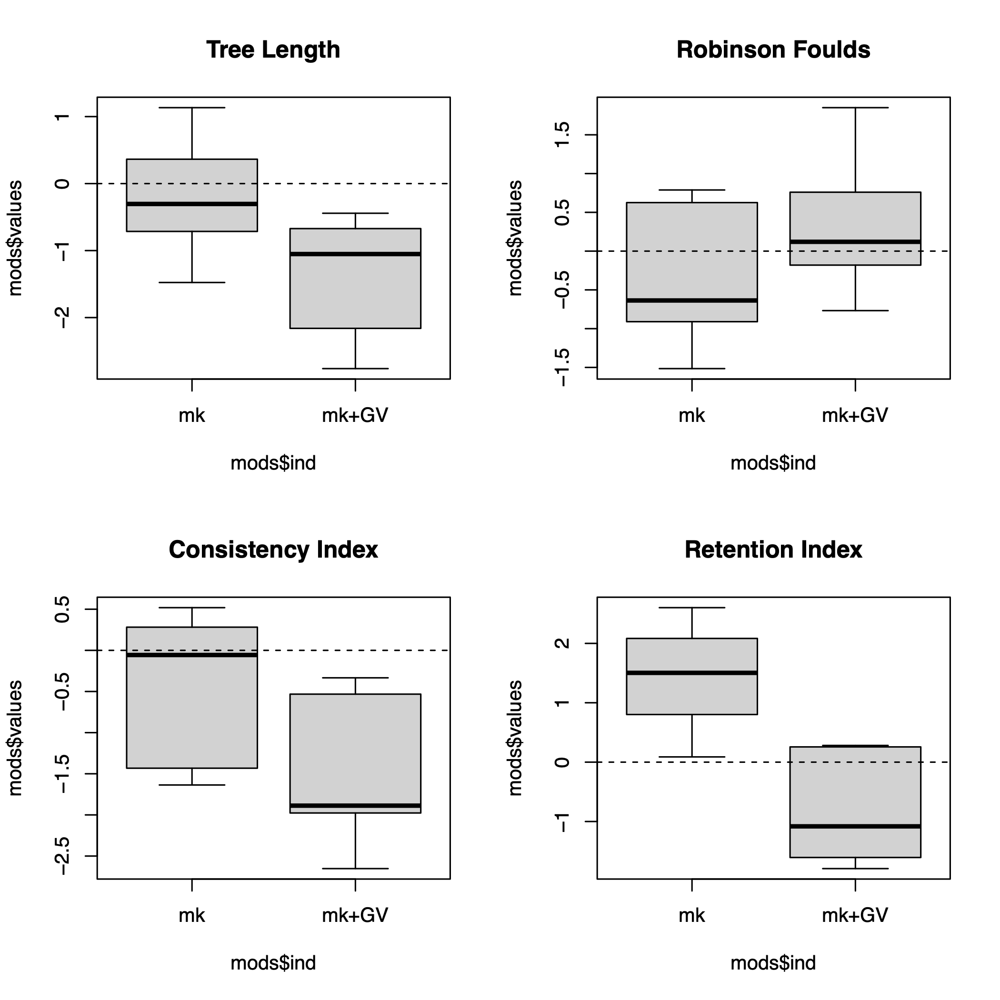
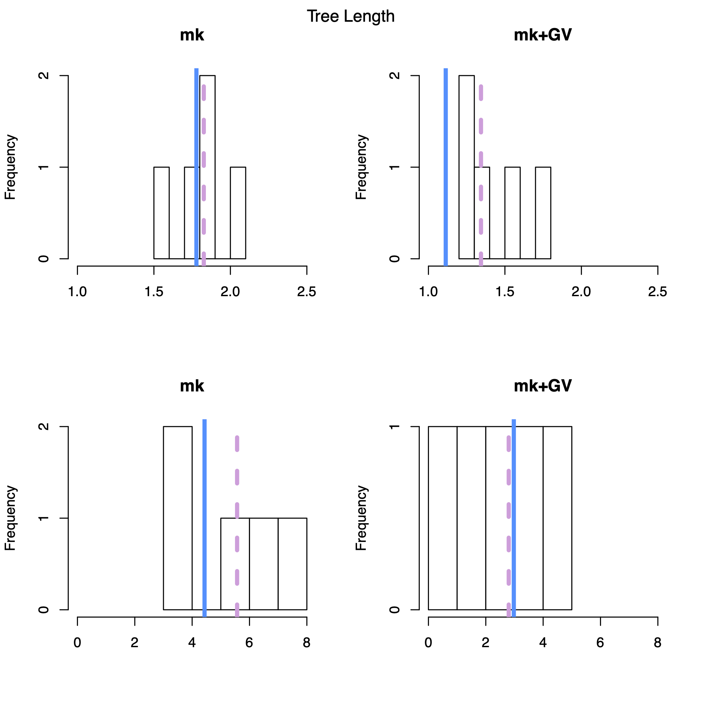
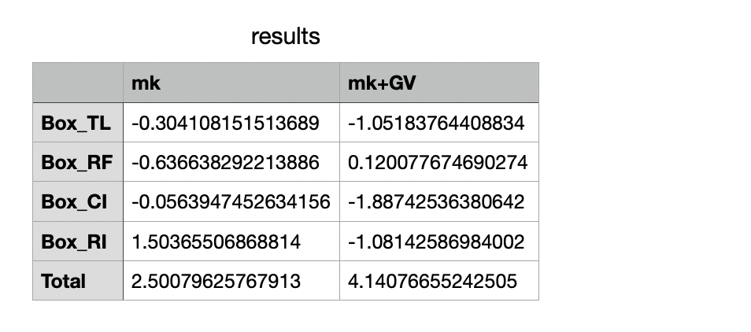

In this exercise we will use posterior predictive simulations to
assess the fit of an evolutionary model to our data. We will test two
substitution models, Mk and Mkv+G. The code highlighted in this tutorial
is just to show the more important parts of a script. You do not
need to copy and paste them into the terminal. Instead, edit
the scripts in your editor and use source(" ")to read them
into RevBayes.
There are 6 rev scripts for the analysis:
MCMC_Simulation.Rev runs an MCMC on your empirical
dataset and samples parameters from the posteriorPP_Simulation.Rev takes the output from the first MCMC
to simulated new datasets under the chosen modelPP_MCMC.Rev runs an MCMC for all the new datasetsTree_Summary.Rev generates test statisticsmk_Model.Rev Mk substitution model scriptmk+GV_Model.Rev Mk+GV substitution model scriptand 1 R script PPS_Analsis.r to summarise the
output.
The data used here is a morphological matrix Brontornis taxa, an extinct genus of giant flightless birds from Argentina. There are 12 taxa and 51 characters.
You can download everything here. Note unlike previous exercises in this course, you don’t need to write any scripts from scratch. Simply modify the existing scripts to run the analysis.
Start with MCMC_Simulation.rev script. We first need to
read in our data and define which substitution model we will use for the
analysis, either Mk or Mkv+G.
morpho <- readDiscreteCharacterData("data/Agnolin_2007a_paleobiodb.nex")
analysis_name = "model_adequacy"
model_name = "model" # what model are you testing? e.g. "mk"
model_file_name = "scripts/"+model_name+"_Model.Rev"Note: These variables are at the start of the rev scripts 1-4. Make sure you add the model you want to use to each script.
This monitor samples the posterior and saves it to a file that can be used to simulate new datasets under the chosen model.
monitors.append( mnStochasticVariable(filename="output/" + model_name + "/output/" + analysis_name + "_posterior.var", printgen=10) )Helper variables and branch lengths are set up as in previous exercises.
Specify the Jukes-Cantor substitution model applied uniformly to all sites. Remember the Mk model is a generalization of the Jukes-Cantor model.
Q := fnJC(4) # this matrix has 4 different character states.
seq ~ dnPhyloCTMC(tree=phylogeny, Q=Q, type="Standard")Set up gamma-distributed rate variation.
alpha_morpho ~ dnUniform( 0.0, 1E6 )
rates_morpho := fnDiscretizeGamma( alpha_morpho, alpha_morpho, 4 )
moves.append( mvScale(alpha_morpho, lambda=1, weight=2.0) )To account for ascertainment bias. Change the coding to
variable.
seq ~ dnPhyloCTMC(tree=phylogeny, siteRates=rates_morpho, Q=Q, type="Standard", coding="variable")Once you have chosen your model you can source the first script.
source("scripts/1_MCMC_Simulation.Rev")We can now simulate new datasets. In this script pay attention to the
thinning variable. This number controls the number of
datasets simulated. We set it too 100 here so every 100th tree is used
in the .var file. In a standard analysis you would set this
a lot lower (e.g. 2).
pps.run(thinning=100)source("scripts/2_PP_Simulation.Rev")Next we need to run an MCMC for all of our simulated datasets. This function runs an MCMC for all datasets in the directory file path.
my_pps_mcmc = posteriorPredictiveAnalysis(mymcmc, directory)
my_pps_mcmc.run(generations=1000)source("scripts/3_PP_MCMC.Rev")We can then generate some test statistics to assess how well each model fit our data. This script calculates the tree length and the Robinson-Foulds (RF) distance for both the empirical dataset and simulated datasets. RF distance is one of several ways to measure the distance between trees.
source("scripts/4_Tree_Summary.Rev")Now run the whole analysis again (scripts 1-4) using the other morphological model. Don’t forget to change the model name in each one!
Use the R script PPS_Analysis.r. If everything has been
run correctly up to now, you only need to set your working directory and
run this file.
The R script should produce a Figures directory
containing 3 files:
Boxplots.pdf This figure contains boxplots of the
effect sizes for the 4 test statistics used here. The closer the plot is
to zero the more similar the simulated results are to the
empirical.
Histograms.pdf This figure shows the distribution of
tree length and Robinson Foulds distance across the simulated datasets.
The blue line shows the empirical values and the pink broken line shows
the mean of the simulated data.
results.csv Stores the effect sizes for each
model.
Try simulating more datasets in the anaylsis (change the
thinnning variable). Does this change the results?